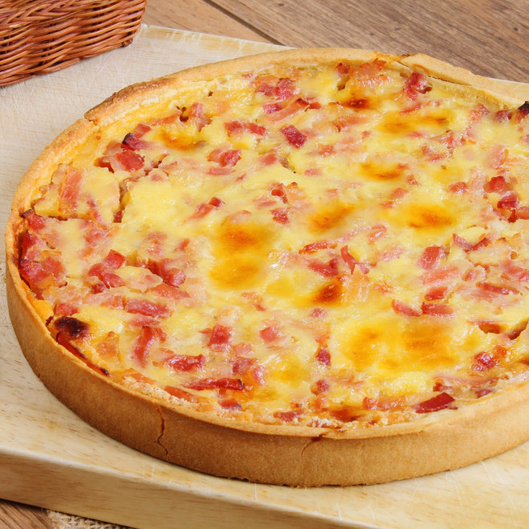

Quiche

Description
An easy recipe to prepare a tasty quiche.
Ingredients
- 1½ cups shredded Swiss cheese
- 4 teaspoons all-purpose flour
- ½ cup cooked ham, diced
- 3 eggs
- 1 cup milk
- ¼ teaspoon salt
- ¼ teaspoon ground dry mustard
- 1 (9 inch) unbaked pie crust
- 2 tablespoons chopped fresh parsley, for garnish
- 2 tablespoons chopped pimento peppers, garnish
Steps
- In medium bowl, toss 4 teaspoons flour with the grated cheese. Sprinkle mixture into the pie shell. On top of cheese, sprinkle 1/2 cup of diced ham.
- In medium bowl, combine eggs, milk or cream, and then add salt and mustard powder. Beat until smooth and pour over cheese and ham.
- Put piece of plastic wrap large enough to overlap sides over top of quiche, then a piece of foil, and seal well around the edges. (plastic keeps the foil from sticking to the food). Place prepared quiche in freezer.
- When ready to prepare, preheat oven to 400 degrees F (200 degrees C.) Remove foil and plastic wrap. Put foil around edge of crust to protect it.
- Bake in the preheated oven for 60 minutes, or until filling is set and crust is golden brown. Garnish with parsley and pimiento if desired.